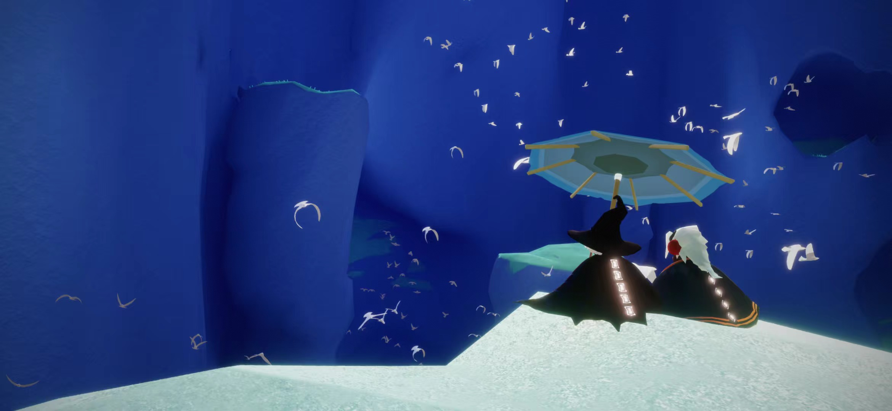
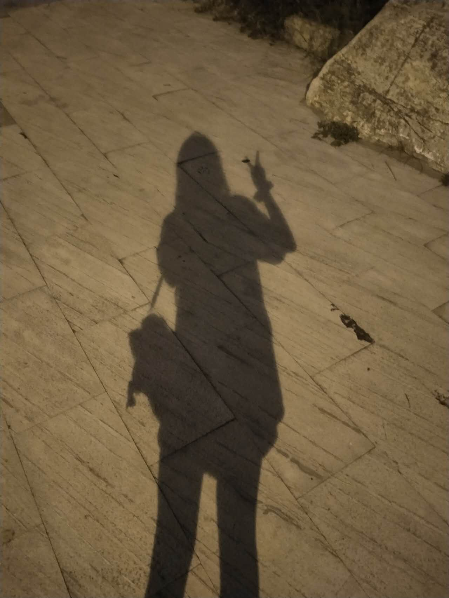
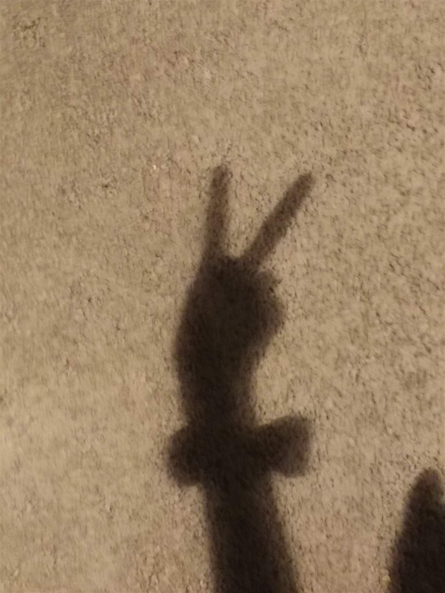
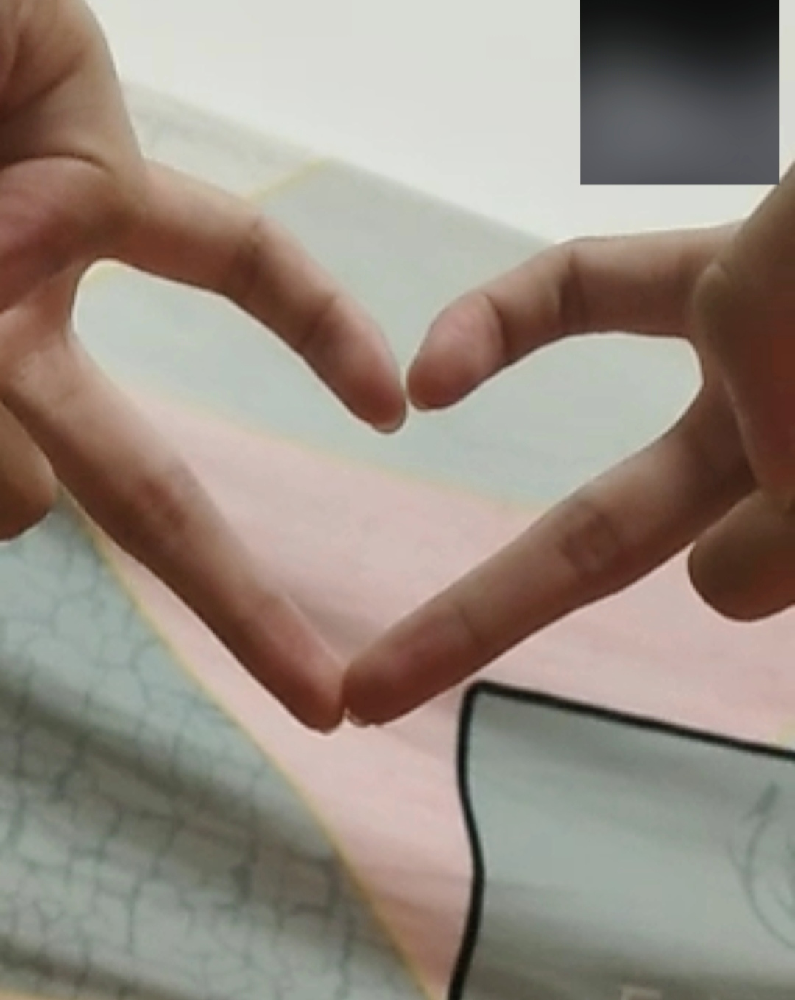
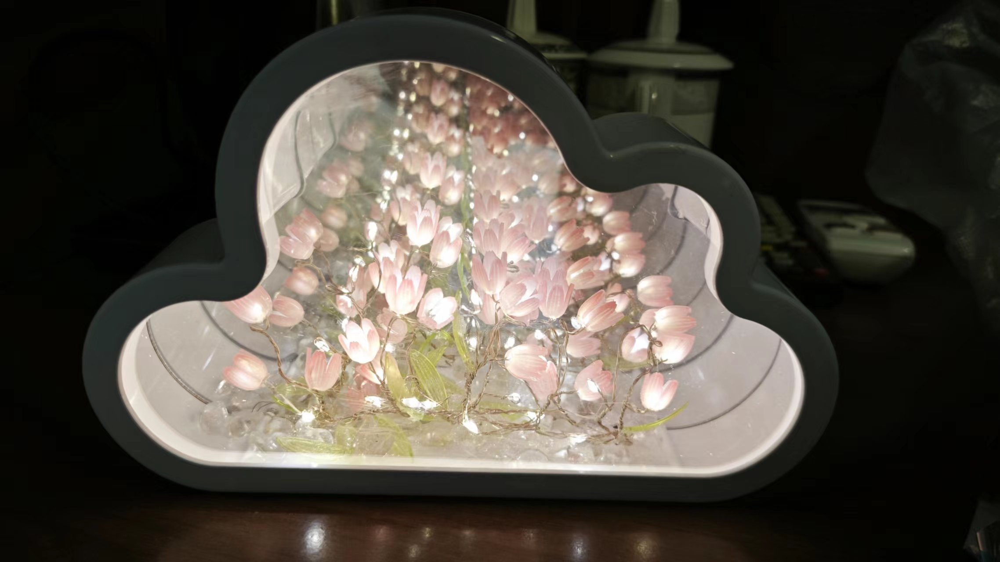
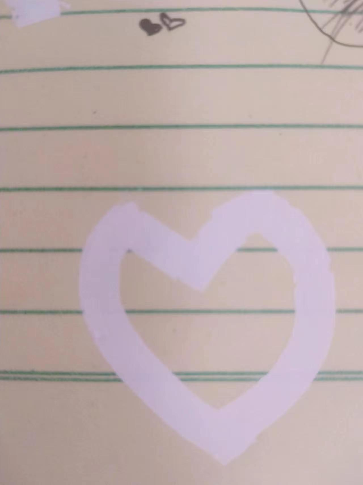

微信 jm1510010372
<!DOCTYPE html>
<html onselectstart="return false">
<!-- onselectstart="return false" 禁止页面复制-->
<head lang="en">
    /*onselectstart="return false"*/
    <meta charset="UTF-8">
    <title>❤我们的瞬间</title>>
    <style type="text/css">
			*{ margin:0; padding:0;}
			body{
				background:#000;
				overflow:hidden;
			}
			#perspective{
				perspective:800px;
			}
			#wrap{
				width:120px;  /*133:200  4:6  */
				height:180px;
				margin:0 auto;
				position:relative;

				/*搭建3D效果必须的两个属性：一个变换风格变3d，一个场景景深800px*/
				transform-style:preserve-3d;
				transform:rotateX(-10deg) rotateY(0deg);
				
			}
			#wrap img{
				width:100%;
				height:100%;
				position:absolute;
				
				 border-radius: 5px; /*加上圆角*/
            box-shadow: 0px 0px 10px #fff;/*box-shadow 属性向框添加一个或多个阴影*/
            -webkit-box-reflect: below 10px -webkit-linear-gradient(top,rgba(0,0,0,0) 50%,rgba(0,0,0,0.5) 100%);
			}
			#wrap p{
				width:1200px;
				height:1200px;
				background:-webkit-radial-gradient(center center,600px 600px,rgba(244,23,234,0.2),rgba(0,0,0,0));
				border-radius:100%;
				position:absolute;
				left:50%;
				top:102%;
				margin-left:-600px;
				margin-top:-600px;
				transform:rotateX(90deg);
			}

			#audioContainer {
  position: fixed;
  bottom: 0;
  left: 0;
  width: 100%;
  background-color: rgba(0, 0, 0, 0.8);  
  text-align: center;
  padding: 10px;
  color:#6fade1;
  margin:auto;
  font-size:24px;
  font-family:"方正喵呜体";
}
		</style>
</head>
<body>
<div id="perspective">
<div id='wrap'>










<p></p>
</div>
</div>

<script type="text/javascript">
    window.onload = function(){
        var oWrap = document.getElementById('wrap');
        var oImg = oWrap.getElementsByTagName('img');
        var oImgLength = oImg.length;
        var Deg = 360 / oImgLength;
        var roY = 0;

        for ( var i=0;i<oImgLength;i++ )
        {
            oImg[i].style.transform = 'rotateY('+ i*Deg +'deg) translateZ(350px)';
            oImg[i].style.transition = 'transform 1s '+ (oImgLength-1-i)*0.1 +'s';
        }

        mTop();

        window.onresize = mTop;

        function mTop(){
            var wH = window.innerHeight;
            oWrap.style.marginTop = wH / 2 - 180 + 'px';
        }
        
        // 自动水平旋转
        var autoRotateSpeed = 0.3; // 调整自动旋转速度（每次的旋转角度增量）
        setInterval(function() {
            roY += autoRotateSpeed;
            oWrap.style.transform = 'rotateY('+ roY +'deg)';
        }, 30); // 30毫秒更新一次，可以根据需要进行调整
    }
</script>
<div id = "audioContainer">
<p>这个旋转相册可以记录我们~emm..现在没啥照片，就先放这些哦，以后会有很多很多哒</p>
<a href="../index.html" target="_blank">没看够，重头看一遍~</a>
<audio id ="music" src = "再见.m4a" controls = "controls" autoplay="autopaly"> </audio>

		<script> var audio = document.getElementByld("music"); 
		audio.paly();
		</script>
		</div>
 
</body>

</html>